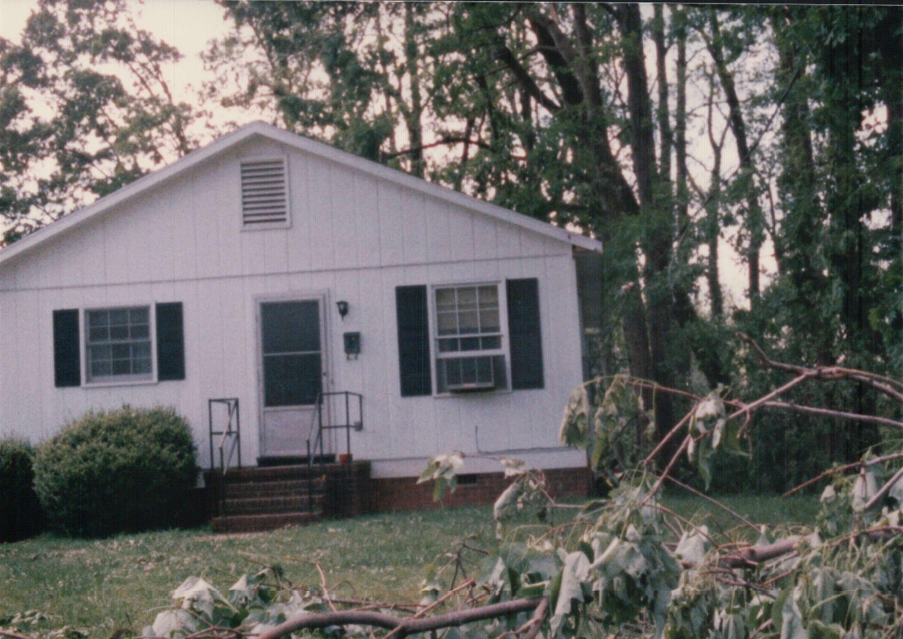

1. Inspect the whole structure
Walk the roofline, vents, chimney, foundation and deck edges. Photograph every gap of a quarter inch or more and note the species using each point.
Services
Exclusion is the form of wildlife control that lasts: the animal is removed humanely, then every entry point is sealed with materials it cannot chew, pull or squeeze through. This page covers the materials, the entry points that matter in New York houses, and how warranty framing should work.
Request an inspection


Exclusion means finding every gap an animal uses or could use, then closing it with a material matched to the species. A raccoon can pull at weak soffit panels and tear shingles. A squirrel chews wood and plastic. Mice fit through a gap the width of a pencil. One method does not suit all three, which is why a proper exclusion plan names the material for each point instead of promising a general seal-up.
The work usually covers the roofline first, because most attic animals arrive from above. Soffit returns, ridge vents, gable vents, chimney flashing and plumbing vent pipes are checked and protected. Ground-level points come next: foundation cracks, gaps around pipes and cables, garage door corners and the edges of decks and porches. Each point is photographed before and after, so you can see what was done without climbing a ladder.
Freeze-thaw cycles and lake effect snow punish weak materials. Expanding foam cracks, shrinks and gets chewed. Plastic vent covers go brittle. The materials that last are metals: quarter-inch hardware cloth for screening, galvanised steel for most inland work, and stainless steel where moisture is constant or the budget allows the longer life. Galvanised mesh is coated in zinc, which slows rust. Stainless costs more and resists corrosion best, a fair choice near the Finger Lakes, Lake Ontario and the Hudson where damp air is routine.
Sheet metal flashing closes flat gaps along rooflines and chimneys. Metal chimney caps with mesh sides stop raccoons and birds while letting smoke out. Ridge guards and purpose-made vent covers protect the long, thin openings that squirrels love. Backer rod plus a quality sealant finishes small cracks, but sealant is a filler, never the barrier itself. Ask any operator to name the material planned for each point before work starts, and to put that list in writing.
The entry point an animal uses tonight is easy to spot. The one it will use next month is the one that gets missed. Soffit intersections at roof returns, the gap where a porch roof meets the main wall, and the space behind gutters all hide openings. Plumbing vents and bathroom fan vents offer warm air and a straight path inside. Old, unused entry holes from a previous animal are a scent-marked invitation to the next one.
A full exclusion pass treats the house as one system. Sealing the active hole while leaving a weak gable vent two metres away just moves the problem along the roof. Operators should check the whole structure, including the deck, shed and garage if they connect to the house. That wider pass costs a little more on the day and saves a second callout, a second removal fee and a second round of attic damage.
A fair exclusion warranty covers the points that were sealed: if an animal gets back in through a sealed point within the warranty period, the operator returns and puts it right. It cannot honestly cover new holes an animal chews in a different place, damage from a fallen tree limb, or points the homeowner declined to seal. Any warranty offered on your job should say, in writing, which points it covers, how long it runs, and what it leaves out.
This site is a matching service in draft form, and partner operators set their own warranty terms. When an operator is matched to your job, ask for the terms before work starts and keep them with your inspection photographs. A company that seals well is usually glad to write its warranty down. A company that will only describe its warranty on the phone is telling you how much the promise may be worth later.
| Material | Best for | Watch out for |
|---|---|---|
| Quarter-inch hardware cloth | Vents, soffits, deck edges | Must be metal, fixed with screws and washers |
| Galvanised steel mesh | General screening inland | Zinc coating wears over many years |
| Stainless steel mesh | Damp, lakeside and coastal air | Higher cost, longest life |
| Sheet metal flashing | Roofline and chimney gaps | Needs correct overlaps to shed water |
| Metal chimney cap | Chimneys and flues | Must suit the flue and allow draft |
| Foam or caulk alone | Nothing on its own | Animals chew it, weather cracks it |
Walk the roofline, vents, chimney, foundation and deck edges. Photograph every gap of a quarter inch or more and note the species using each point.
Fit one-way doors or use humane trapping where lawful, check for young, and confirm the structure is empty before any sealing starts.
Fit hardware cloth, flashing, caps and guards matched to the species and the location, fixed so animals cannot pull them free.
From the attic, look for daylight at sealed points and listen over the following nights for new activity at unsealed spots.
Hand over before and after photographs, a materials list and the written warranty terms for the points sealed.
Exclusion means sealing every entry point so animals cannot get back in after removal. It matters because removal alone leaves the hole, the scent trail and the warm attic exactly as inviting as before. Most repeat problems trace back to a removal job that skipped sealing, not to a new animal choosing the house at random. An inspection in one of the ten upstate towns we cover confirms the details before any work or price is agreed in writing.
Both, in that order. The animal is removed humanely first, with checks for young, and only then are entry points sealed with metal materials. Sealing first would trap animals inside, where they panic and chew new routes out. Any quote you accept should list removal and sealing as separate, named parts of the same job. If you are unsure, start with an inspection and written findings, then decide on the next step with clear information in hand.
Quarter-inch hardware cloth is the standard for wildlife exclusion. Its openings are too small for mice to pass and too tight for squirrels to work their teeth into, and in galvanised or stainless steel it resists raccoon pulling. Larger mesh, chicken wire and plastic netting all fail against one or more of these animals. That approach keeps the work humane, avoids sealing an animal inside, and gives you a record of exactly what was done.
Stainless lasts longer in damp air, while galvanised suits most inland houses at a lower cost. Freeze-thaw cycles, lake effect moisture and Hudson Valley humidity all speed up corrosion of cheaper metals. For a lakeside home or a point that stays wet, stainless is usually the better buy. For dry roofline work, galvanised performs well for years. An inspection in one of the ten upstate towns we cover confirms the details before any work or price is agreed in writing.
Expanding foam is not a barrier. Squirrels and rats chew through it in minutes, raccoons pull it out, and New York winters crack it as it expands and contracts. Foam has one fair use in exclusion: as a backing filler behind metal mesh or flashing. On its own it gives the look of a repair and the result of an open door. If you are unsure, start with an inspection and written findings, then decide on the next step with clear information in hand.
Exclusion cost depends on the species and the number of points sealed. Use the canonical guide ranges on this site: inspection $150-$300, single-animal removal with basic sealing $300-$600, and bat exclusion $800-$2,500 because it often covers a whole roofline. Attic cleanup, where needed, is quoted after inspection rather than guessed in advance. That approach keeps the work humane, avoids sealing an animal inside, and gives you a record of exactly what was done.
Well fitted metal exclusion should last for many years, often the life of the vent, cap or roof section it protects. Its weak points are not the materials but the house around them: new roof work, storm damage and rotting fascia can open fresh gaps. An annual look at the roofline each autumn catches those changes while they are still small and cheap to fix. An inspection in one of the ten upstate towns we cover confirms the details before any work or price is agreed in writing.
A sound warranty covers the points the operator sealed, for a stated period, if an animal re-enters through one of those points. It should name the points, the period and the remedy, usually a return visit to repair the seal. It cannot fairly cover new damage elsewhere on the house, and any operator who promises that in vague terms should be asked to write it down. If you are unsure, start with an inspection and written findings, then decide on the next step with clear information in hand.
No. Bat exclusion in New York must avoid the maternity and hibernation blackout windows, generally May 1 to August 15 and October 1 to March 31, when flightless young or hibernating bats may be inside. Outside those windows, one-way devices let bats leave at dusk and stop them returning. Timing is a legal and welfare matter, not a scheduling preference. That approach keeps the work humane, avoids sealing an animal inside, and gives you a record of exactly what was done.
Yes, chimneys and vents are core exclusion points. A metal chimney cap with mesh sides stops raccoons, squirrels and birds while keeping the flue working. Gable, ridge and bathroom vents get hardware cloth screening fitted so air still flows but animals cannot pass. Blocking a vent solid is never the answer, because the house still needs the ventilation the vent was built for. An inspection in one of the ten upstate towns we cover confirms the details before any work or price is agreed in writing.
Keep raccoons out by removing the current animals humanely, sealing every roofline gap with metal, capping the chimney, and cutting tree limbs back from the roof. Raccoons are strong and curious, and they test weak points. Secure bins and pet food so the yard itself is less rewarding. A raccoon that cannot enter and finds no food usually moves on within days. If you are unsure, start with an inspection and written findings, then decide on the next step with clear information in hand.
Wildlife exclusion covers larger animals and every entry point on the structure, while rodent proofing focuses on the small gaps mice and rats use. The materials overlap, quarter-inch or finer mesh, metal flashing and sealed pipe entries, but the survey differs. A house can need both: mice use gaps a raccoon ignores, and raccoons open holes mice later adopt as their own routes. That approach keeps the work humane, avoids sealing an animal inside, and gives you a record of exactly what was done.
No, never seal a hole while noises continue inside. An animal sealed in will chew through ceilings, walls or wiring to escape, and one that dies inside creates an odour and cleanup problem far worse than the original visit. Fit a one-way door or wait for confirmed removal first. Silence for several nights, checked from the attic side, is the signal that sealing can start. An inspection in one of the ten upstate towns we cover confirms the details before any work or price is agreed in writing.
Tell us the town, the animal or noise involved, and when it started. An operator covering your town will explain the inspection, the likely next steps and the typical ranges before any work is booked.
Placeholder: call-tracking phone number and form endpoint are added before launch. No phone number is shown or invented in this draft.